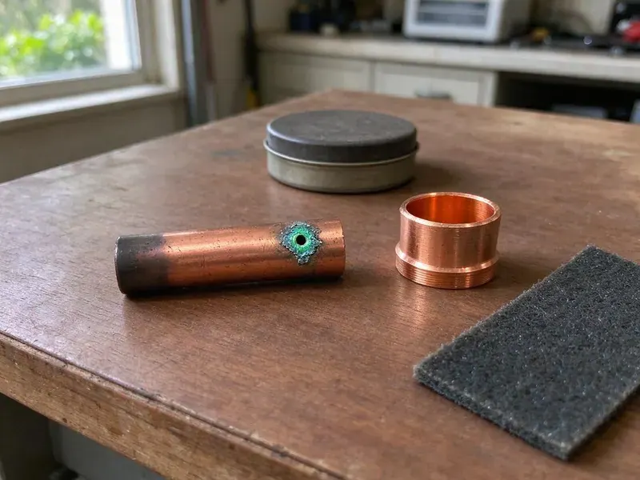

Underground Pipe Repair in Glen Burnie, MD
BVL Plumbing repairs buried pipe in Glen Burnie, MD then tests the line before the hole is closed.
- Same-Day Leak Visits
- Pressure Tested Before Backfill
- Written Quotes Before Digging
- PEX or Type K Copper
Get the Buried Leak Found in Glen Burnie, MD
Shut the meter valve if water is surfacing, and we will walk you through it on the phone.
Buried Water and Sewer Line Repair in Glen Burnie, MD
BVL Plumbing knows a buried pipe leak can waste thousands of gallons before anyone notices. Bills tell the story first. Galvanized steel, polybutylene and thin-wall copper service lines all fail underground, and we find the break, repair or replace the damaged pipe, and pressure test the line before backfilling. Then the trench gets compacted.
Some of what we do:
- Pipe path tracing with electronic locators
- Acoustic and tracer gas leak detection on buried lines
- Code-compliant direct-bury pipe and fittings

Additional Plumbing Repair Services in Glen Burnie, MD
We offer expert plumbing repair services across Glen Burnie, MD to fix leaks, restore flow, and keep your system running smoothly.


Customers
Why Choose BVL Plumbing for Underground Pipe Repair in Glen Burnie, MD?
A failing service line rarely leaks just once. More leaks tend to follow. When we find old galvanized or polybutylene at the repair, we tell you straight whether a spot fix makes sense or whether the whole line is on borrowed time. The decision is yours.
- Right Materials, PEX or Type K copper for water, Schedule 40 PVC for sewer.
- Pinpoint Locating, Acoustic and electronic tools put a mark right over the break.
- Written Quotes, Footage, method and price are written up first.
Citywide Coverage
We repair underground pipe in every part of Glen Burnie, from older blocks with galvanized services to newer subdivisions with PEX and PVC. We stock fittings for both. That means most jobs can start the same day we locate the leak, without waiting on a supply house run for a transition coupling.
Experienced Team
Techs ride with senior plumbers for months before running underground calls alone. Buried mistakes stay buried. They learn bedding, depth and fittings on real jobs, and every repair still gets a pressure test before the hole is closed.
Safety-First Approach
Trenches deeper than five feet get shoring or a trench box, as federal rules require. Soil caves without warning. Our crew sets the protection before anyone climbs in, keeping dirt away from the edge so the trench holds.
Trusted Certified Glen Burnie Plumbing Services Professionals
At BVL Plumbing, we take pride in licensed, certified plumbing services throughout Glen Burnie, MD. Credentials matter in this trade. Our plumbers hold recognized industry credentials, and they follow strict safety and quality rules on every repair, installation and maintenance call we run.
Call Us Now PHCC Plumbing Contractor Recognition
PHCC Plumbing Contractor Recognition Better Business Bureau (BBB) Accreditation
Better Business Bureau (BBB) Accreditation Angi Certified Pro
Angi Certified Pro ISO 9001 Quality Management Certification
ISO 9001 Quality Management CertificationUnderground Pipe Repair Work We Handle in Glen Burnie, MD
HOA and Multifamily Underground Repair in Glen Burnie
HOA common areas and apartment complexes have long buried runs under parking and sidewalks. Tenants still need to get in. We locate carefully to avoid unnecessary concrete cutting, schedule work around residents, providing photos and pressure test records for managers and owners. Night work is an option.

Emergency Underground Pipe Repair in Glen Burnie
A burst service line can flood a yard and wash out the soil under a driveway. Turn off water at the meter. We talk you through the shutoff on the phone and send a crew to locate and expose the break, getting your water back on as soon as the repair is made and tested. Same-day repairs are typical.
Trenchless Pipe Repair in Glen Burnie
Trenchless repair replaces or relines buried pipe without opening its full length. Two small pits, usually. We can pull new PEX or HDPE through the old pipe path or line a sewer lateral with resin, so concrete and established plantings stay put. Not every pipe qualifies. The route and condition decide it.
Sewer Line Underground Repair in Glen Burnie, MD
Roots and settling soil cause most buried sewer failures. Age does the rest. We offer open trench repair, pipe bursting and cured-in-place lining, and the camera footage decides which one fits the depth, the damage and what sits on top of the line. All work meets Maryland plumbing code.
Underground Water Line Repair in Glen Burnie, MD
A leaking water service runs at full street pressure around the clock. Bills climb fast. Low pressure, a wet spot that never dries and a meter that turns with everything off are the usual clues, and we confirm the leak with a pressure drop test before listening along the pipe route to find the exact spot. Repairs use approved fittings.
Galvanized and Polybutylene Line Replacement in Glen Burnie
Galvanized steel rusts from the inside until little water gets through. Polybutylene splits instead. If your buried service is either one, patches are usually temporary, which is why we recommend a full swap to PEX or copper threaded along the existing route. You will notice the pressure.
Underground Leak Detection & Repair in Glen Burnie, MD
Finding a buried leak takes the right tools. Guessing wastes time. We combine ground microphones, tracer gas and electronic pipe locating in Glen Burnie, MD, and the result is a mark on the surface within a few feet of the actual break. The repair follows the mark.

Main Water Line Repair in Glen Burnie
Your main water line runs from the meter box to the house under constant pressure. Leaks never fix themselves. A spinning meter dial with every fixture off, falling pressure or a wet spot that never dries tell us to locate, dig and splice the line with code-approved fittings. Old galvanized usually gets replaced.
Local Underground Pipe Repair in Glen Burnie, MD
Most underground repairs in Glen Burnie are scheduled within a day or two of locating. Surfacing water moves up the list. Phone (443) 719-1650 with what you are seeing, and we will help you find and close the meter valve if water is coming up.
A buried leak in Glen Burnie gets worse every hour. Delay costs more. We book locating visits across the Glen Burnie area, give you a written price before we dig and pressure test the repair before we backfill.
BVL Plumbing at a Glance
- Fully licensed plumbing team covering Glen Burnie, MD
- Same-day appointments and 24/7 emergency response
- Clear written estimates, no hidden fees
- 4.8-star rated by 542+ Maryland customers
Glen Burnie Map
Glen Burnie Information
- Population
- 72,891
- Area codes
- 410/443/667
- Service area
- Glen Burnie and communities within 40 miles
- Nearby
- Severn, Dundalk, Baltimore, Columbia
Buried pipe in Glen Burnie, MD gets pushed around by settling soil, and old joints and thin-wall pipe are the first to leak. Clay that swells when wet and shrinks when dry can stress sewer laterals and water service lines over time.
Expert Services
Call BVL Plumbing for honest, reliable plumbing from people who know the trade in Glen Burnie, MD.
Our Specialized Plumbing Services in Glen Burnie, MD
At BVL Plumbing, you get every kind of plumbing service from one company across Glen Burnie, MD. From leak detection to full system installs, our team works fast and charges fair prices on homes and commercial properties alike. Explore our core services below:


How an Underground Pipe Repair Goes in Glen Burnie, MD
Every underground repair in Glen Burnie follows the same order: find it, price it, fix it, prove it.
Call and Describe the Problem
Phone BVL Plumbing at (443) 719-1650 and tell us what you are seeing. We will schedule a crew to find it.
Locate & Quote
We locate the leak with acoustic and electronic gear, then give you a written quote.
Dig and Repair
Once you approve, we call 811, dig at the mark and repair the pipe.
Frequently Asked Questions About Underground Pipe Repair in Glen Burnie
Simple buried pipe repairs usually run $500 to $2,500. Big jobs climb higher. Extensive trenchless sewer replacements can be $5,000 to $15,000 or more, depending on where the pipe runs, how bad the damage is and the method used to fix it. We quote after inspection.
It depends on your policy and the cause. Read the exclusions. Sudden and accidental damage is sometimes covered, while slow leaks, wear and tear and old pipe failing from age usually are not. Ask your insurer directly. We provide documentation for the claim.
A spot repair is usually a few hours. Trenchless jobs take about a day. A full sewer replacement with excavation can take two to five days, with footage, depth and inspections setting the pace. You get the timeline with the quote.
It gets worse and more expensive. Soil washes out. A leaking service can undermine a driveway, soak a foundation, grow mold in a crawlspace and run up the water bill every month, while a broken sewer line leaks waste into the yard. Fix it sooner.
Look for wet ground that never dries. Pressure drops matter too. Unexplained bill increases, foul odors near the cleanout or gurgling drains point to trouble in the pipe you cannot see. A locate visit confirms it.
Check the meter with every fixture off. Watch the dial. If it moves, water is going somewhere, and a wet or sinking spot in the yard or a hissing sound near the meter box usually points to the buried service. We can confirm it fast.
Less digging is the big one. Your lawn survives. Trenchless methods leave driveways, patios and established landscaping alone, and the savings on putting the yard back often cover the higher method price. It is often faster.
Most point repairs take a few hours to a day. Full lines run longer. A full service line replacement typically takes one to two days, with footage and method setting the pace. We give you the timeline first.
What People Are Saying About Our Plumbing Experts?

Greg S.
I manage a small strip center with six tenants. BVL Plumbing handles our annual backflow testing and fixed a recurring clog in the shared sewer line that had been backing into the nail salon. Their reports come in clean and on time.
Commercial Plumbing · Severn, MD
James P.
Our restaurant had a slow leak at the hand sink that was rotting the cabinet base. BVL Plumbing came in at six in the morning before prep, replaced the trap and both supply lines, and was packed up before my first cook clocked in.
Commercial Plumbing · Glen Burnie, MD
Carlos V.
Our house still had galvanized pipe, and upstairs the shower was a trickle. The crew repiped everything in PEX over three days and patched every drywall hole before they left. The pressure difference is night and day.
Repiping · Ellicott City, MD
Karen W.
After our third pinhole leak in copper, we stopped patching. BVL Plumbing gave us a written plan room by room and repiped the house in PEX while we stayed in it. The crew covered our floors every morning and cleaned up every night.
Repiping · Glen Burnie, MDRobert G.
The camera showed a full break in our clay sewer line near the street. BVL Plumbing replaced it with a trenchless pipe burst, so the only digging was two small pits in the yard. They let us watch the footage before and after.
Sewer Line Replacement · Baltimore, MDAngela D.
Our sump pump quit during a storm and the water was an inch from the basement carpet. BVL Plumbing put in a new pump with a battery backup that same evening. We have had two heavy rains since. It kicked on both times.
Sump Pump · Ellicott City, MD